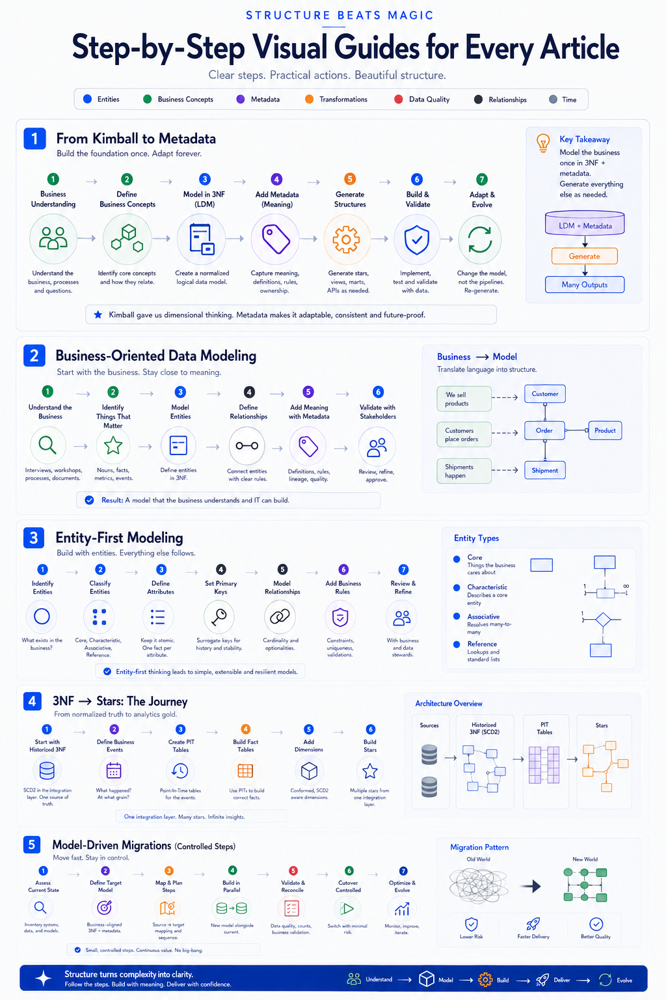
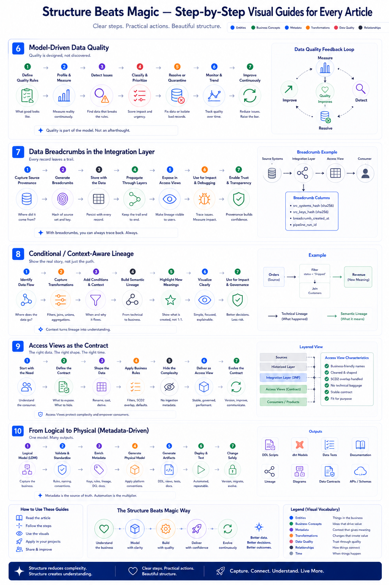
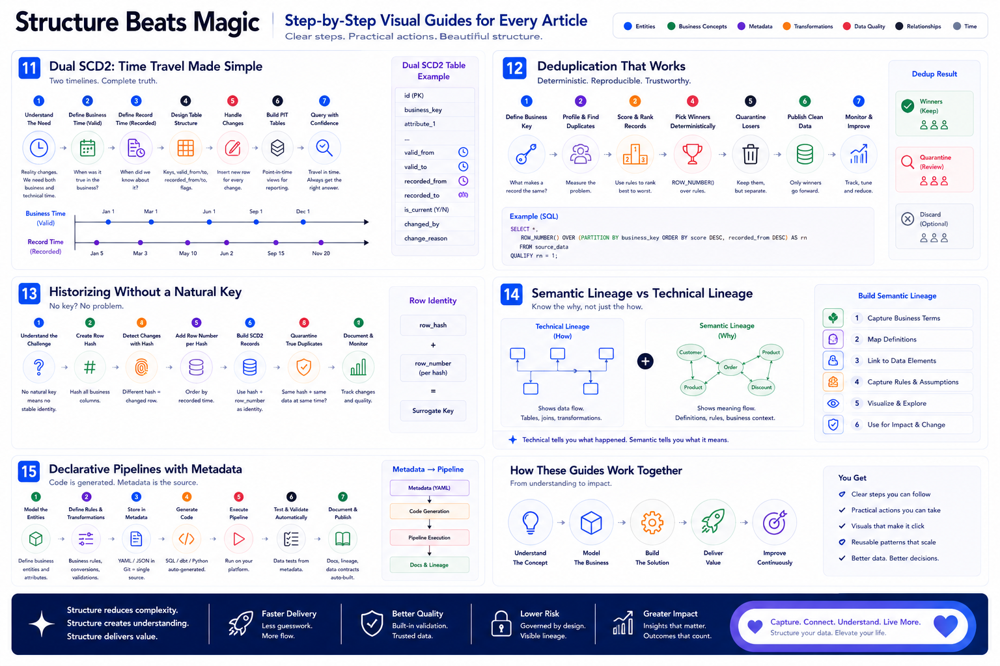

Structure that makes the tools you already run do more.
MDDE is how I work, not a product I sell you. Modern data platforms don't fail because of bad SQL or poor tooling — they fail because structure becomes invisible, meaning drifts, and change becomes dangerous. I make that structure explicit again and wire it into your existing stack — dbt, SQLMesh, PowerDesigner, Databricks — so the platform you already have does more.
Metadata in the middle: parse SQL → validate & extend the model → generate clean SQL or dbt back. The model is the source of truth; the tools are how it ships.
In one paragraph
Metadata in the middle, not a parallel universe.
I parse existing SQL into metadata, then validate, improve and extend that metadata — and generate clean SQL back, or a dbt project, or whatever target fits. SQL is both input and output, round-tripped without losing intent. Structure stops hiding in joins, filters and aliases and becomes explicit, governed and executable — with full lineage and clear documentation.
The point isn't a new platform. It's that the model becomes the centre, and your existing tools become how that model ships. I'm the structure-and-model person who makes your stack express it — not someone asking you to adopt one more framework.
Where it has actually run
Two banks. Existing tools, extended.
Every part of MDDE comes from real delivery — extending standard enterprise tools, not building a framework from scratch.
de Volksbank · ASN
PowerDesigner, extended into a generation engine.
I customised PowerDesigner with extensions until it drove model-based generation — the foundation of the de Volksbank MDDE solution. A standard enterprise modeling tool, made to do far more than it shipped with.
ABN AMRO
CTE-notebook generators on Databricks.
Scripts that generate Databricks notebooks to run CTE-by-CTE regression testing — proving each transformation step is equivalent before and after a change. Extending Databricks with structure, not replacing it.
ABN AMRO
Metadata as the middle → generate dbt.
Parse SQL into a YAML metadata layer, improve and validate it, then generate SQL again from that model. Because metadata is the centre, the same model can also generate a dbt project and take it from there — tool-agnostic by design.
ABN AMRO
Databricks Genie, woven into the build.
Integrated Databricks Genie into the workflow of building model-driven SQL step by step — Genie supported by the underlying structure and method. A way to use Genie to build transformations, grounded in the model rather than guessing.
Where this is heading
AI generates the code. Structure decides whether you can trust it.
More and more code is generated by AI. The teams that win at it aren't the ones with the best prompts — they're the ones with a solid foundation for the AI to generate against: clear rules, curated patterns, sample code, and a model that says what "correct" means.
That's exactly what MDDE is. The building blocks — skills, rules, validated sample code, the metadata model — become the grounding for an AI generation process that produces custom solutions, then integrates them with dbt, SQLMesh, Fabric or Databricks. Not a library you install and maintain; the structured foundation I bring in so generation is reliable instead of a guess. It's structure beats magic, pointed at code generation itself.
The half that makes it stick
The structure only lasts if the team adopts it.
A model on its own changes nothing. So the work is as much about people as patterns: I communicate it in visuals, prove it in demos, and get the team into the rhythm themselves.
I inspire teams to work structured, document their work — increasingly with AI — visualise what they're building, and demo their intermediate results. I do it to set the example; the aim is for the team to pick up the habit and keep it after I leave. That's transfer-by-design: the structure, and the way of working around it, become yours.
SQL is expressive and close to execution — and where architecture quietly accumulates. MDDE doesn't replace it; it parses, reasons about, and regenerates it. Any system that can't work with real SQL gets bypassed.
2 · Modeling never disappeared — it went implicit
Data modeling became embedded in joins, filters, aggregations and conventions. Implicit models scale execution, not understanding. MDDE makes structure explicit again — without heavyweight upfront design.
3 · Metadata must participate, not just describe
Metadata isn't documentation on the side. It drives generation, validation and lineage — it's a first-class, executable model.
4 · Optimization is not migration
Improving how something runs is not the same as changing what it means. MDDE keeps the two separate and provable.
5 · One-way generation always fails
Generate-and-forget drifts. MDDE round-trips: SQL ⇄ metadata, so the picture never separates from the truth.
6 · Humans stay in control
Observation is separate from enforcement. Understanding does not force change. The engine proposes; people decide.
7 · Evolution beats enforcement
Architecture that adapts is adopted; architecture that's imposed is bypassed. MDDE nudges, it doesn't police.
8 · It works with your tools, not against them
MDDE isn't a platform to adopt or a tool to rent. The model is the asset; your existing tools — dbt, SQLMesh, PowerDesigner, Databricks — are how it ships. Extend what you have rather than replace it.
9 · Lineage is a first-class citizen
Full horizontal & vertical lineage isn't a report you bolt on — it falls out of the model by design.
10 · Performance enables adoption
If it's slow, it won't be used. The method has to be fast enough to live inside real delivery.
11 · Intelligence augments, never replaces
AI reasons over the metadata to help — it doesn't guess in place of the model, or optimize away rules it can't see. Reliable because engineered.
The method, step by step
What it looks like in practice.
The tenets above are the principles; these are the moves. Fifteen visual guides — the patterns I bring into an engagement, from first model to governed delivery. They're deliberately concrete: this is the work, not a pitch.
Foundation — model once, generate the rest
From Kimball to metadata, business- and entity-first modeling, 3NF → stars, and model-driven migrations. The business gets modeled once; the structures are generated from it.

Part one — the foundation: model the business once in metadata, generate everything else as needed.
Trust & delivery — quality and lineage by design
Model-driven data quality, data breadcrumbs, context-aware lineage, access views as the contract, and logical → physical generation. Quality and provenance are built in, not bolted on afterwards.

Part two — trust & delivery: quality, breadcrumbs and lineage fall out of the model rather than being added later.
Time & automation — history and pipelines from metadata
Dual-SCD2 time travel, deterministic deduplication, historizing without a natural key, semantic vs technical lineage, and declarative metadata-driven pipelines. Code is generated; the metadata is the single source.

Part three — time & automation: bitemporal history and pipelines generated from the model, so the picture never drifts from the truth.
Why it's different
Not another tool to adopt. A way of working I bring in.
Most approaches add a layer — a new platform, a wrapper, a YAML universe parallel to the SQL. MDDE goes the other way: it treats the SQL and the model as one round-tripped truth, makes metadata executable, keeps humans in control, and rides on the tools you already run. It's the practical core of Structure + Data + AI + Rules → Intelligence.
Want your existing stack doing more?
That's exactly the kind of engagement I take on — we choose the patterns, prove them, and build them into your tools together.